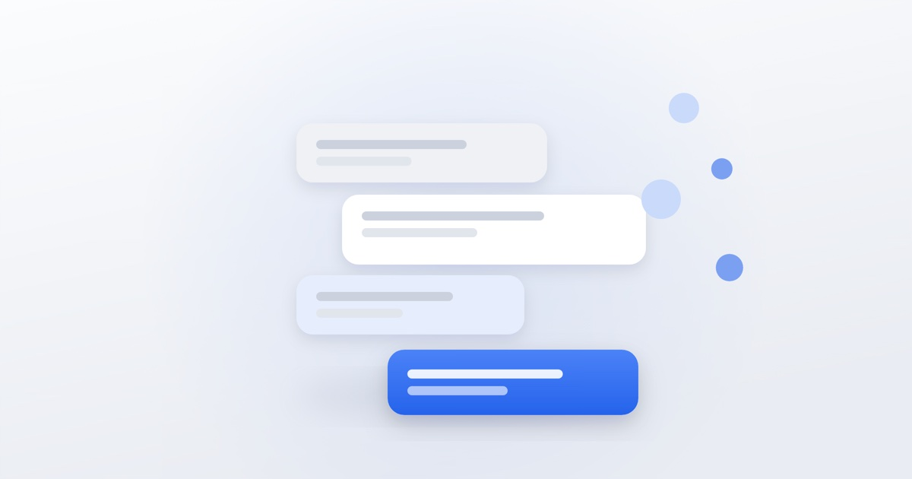

Как вести Telegram-канал для бизнеса

Telegram устроен иначе, чем ленточные соцсети: здесь нет алгоритма, который подсунет ваш пост незнакомому человеку. Подписчик приходит осознанно и так же осознанно уходит. Отсюда другие правила работы.
Определитесь с типом канала
- Экспертный — вы делитесь знаниями, продажи идут фоном. Долго растёт, но даёт лояльную аудиторию.
- Новостной или городской — быстро набирает подписчиков, монетизируется рекламой.
- Сервисный — акции, наличие, запись. Работает для тех, кто уже клиент.
- Личный бренд — канал основателя, где бизнес показан изнутри.
Смешивать типы можно, но основную линию стоит выбрать: канал, где новости чередуются с акциями и личными мыслями, теряет читателя.
О чём писать
Главное отличие от ленты соцсети — в Telegram люди читают текст. Здесь работают развёрнутые разборы, наблюдения из практики, разбор чужих ошибок, закулисье работы.
Плохо работают: перепечатки чужих новостей без комментария, поздравления с праздниками, посты «мы открылись» без пользы для читателя.
Частота
Оптимум для большинства бизнес-каналов — 3–5 публикаций в неделю. Ежедневные посты требуют, чтобы каждый был по делу, иначе канал отключают от уведомлений, а потом отписываются.
Важнее регулярности объём: длинный пост раз в три дня удерживает лучше, чем ежедневные две строки.
Оформление
- Первая строка — самая важная: в уведомлении видно только её.
- Разбивайте текст на абзацы, используйте выделение для ключевых мыслей.
- Изображение не обязательно, но повышает заметность в ленте.
- Один пост — одна мысль и одно действие.
Комментарии
Подключённые комментарии превращают канал в сообщество, но требуют модерации. Если отвечать некому — лучше оставить только реакции. Мёртвый комментарий-чат выглядит хуже, чем его отсутствие.
Как набирать подписчиков
- Посевы — платные размещения в других каналах, основной способ.
- Взаимные упоминания с каналами схожей аудитории.
- Перелив аудитории из других соцсетей и с сайта.
- Офлайн — QR-код в точке продаж, в чеке, на визитке.
Как понять, что канал работает
Смотрите на три показателя: процент просмотров от числа подписчиков, динамику отписок после публикаций и количество переходов по ссылкам. Рост подписчиков сам по себе ничего не значит, если их не читают.
Монетизация
Канал с живой аудиторией окупается двумя способами: продажей собственных услуг и продажей рекламы. Второе имеет смысл, когда аудитория набрала несколько тысяч и однородна по интересам.
Мы ведём телеграм-каналы клиентов: от концепции и рубрик до посевов и отчётов. Напишите, если нужен канал, который работает, а не просто существует.